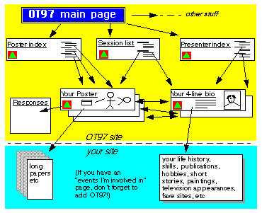

OT97 Web Poster Site Topography

The conference Main Page will lead off to various details about how to get
to Oxford etc. It will also point to an index of posters and an index of presenters.
These will give prospective participants some idea of what will be happening.
As well as attracting participants, it will help people to decide which
sessions they would like to attend, and to think about some of the issues
in advance.
We'd like you to provide
- a short description of yourself --- that's the easy bit: just fill in
the form on the next page; and
- a poster consisting of one or two web pages.
Both of these might point on to more detailed stuff at your own site, if
you have one.
The following two pages ask for details of yourself and of the poster(s)
you'd like to provide. Please try to provide at least a poster for the session
you will be running. Other posters are welcome, about any topic you'd like
to discuss at the conference. Plenty of slots will be allocated at the conference
for BOF sessions to discuss these topics.

- The session list
- Lists the conference programme in temporal order, with short abstracts.
- The poster index
- Lists posters by topic. There will be some redundancy betwen this and
the session list, but there should eventually be more posters than sessions.
We'll make the extra ones stick out in some way. (Better suggestions welcome.)
- The presenter index
- Lists the speakers in alphabetical order
- Your short bio
- Carries your photo (so that people can identify you easily when you
meet, and to aid recall from half-remembered previous encounters)
- Short description of who you are, what you do (same as in conference
programme), your interests
- If you're a speaker, points back to your session.
- BOF organisers, poster-posters, also welcome.
- Your poster(s)
- Describes a topic of interest
--- something you'd like to discuss or find out about
--- something you'ld like feedback on
--- something you're running a session about.
- Everyone is welcome to post a poster.
- The Editor reserves the right to edit.
- Reponses
- Text comments from others automatically posted
The next two pages ask for details of you and your poster, and provide
advice on poster production.